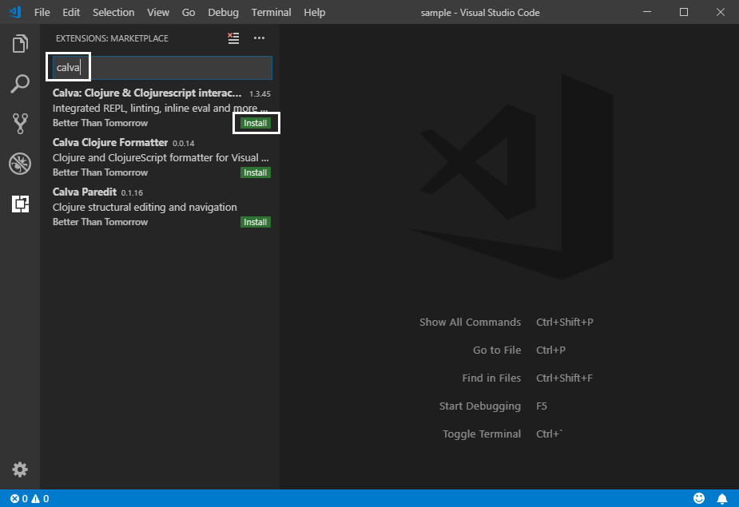
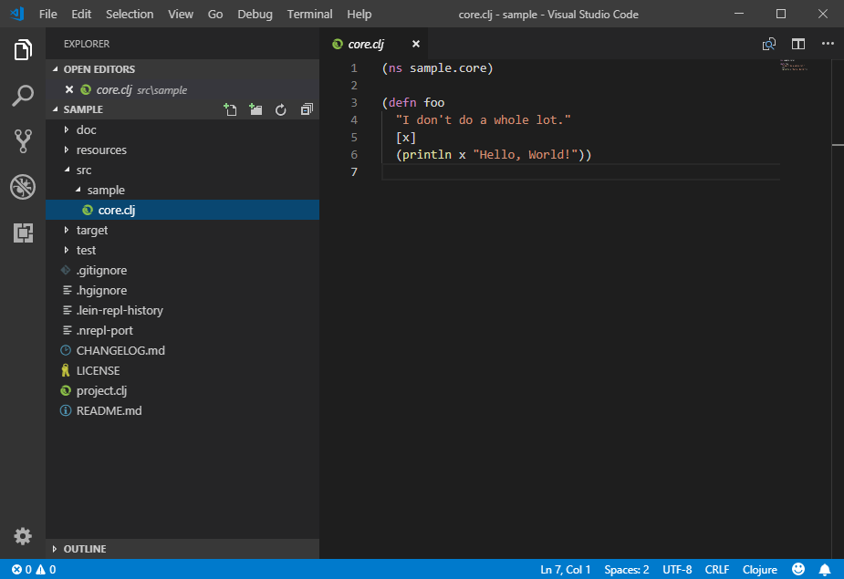
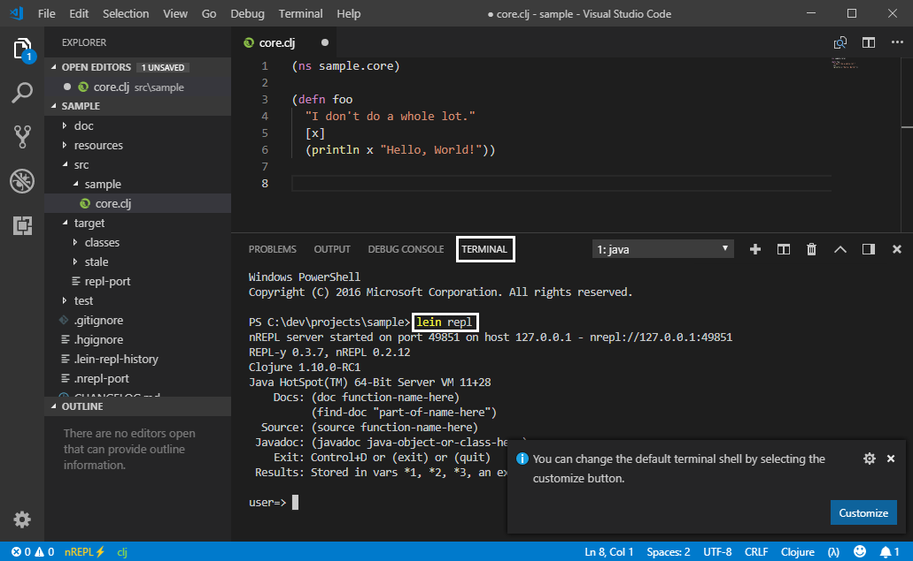
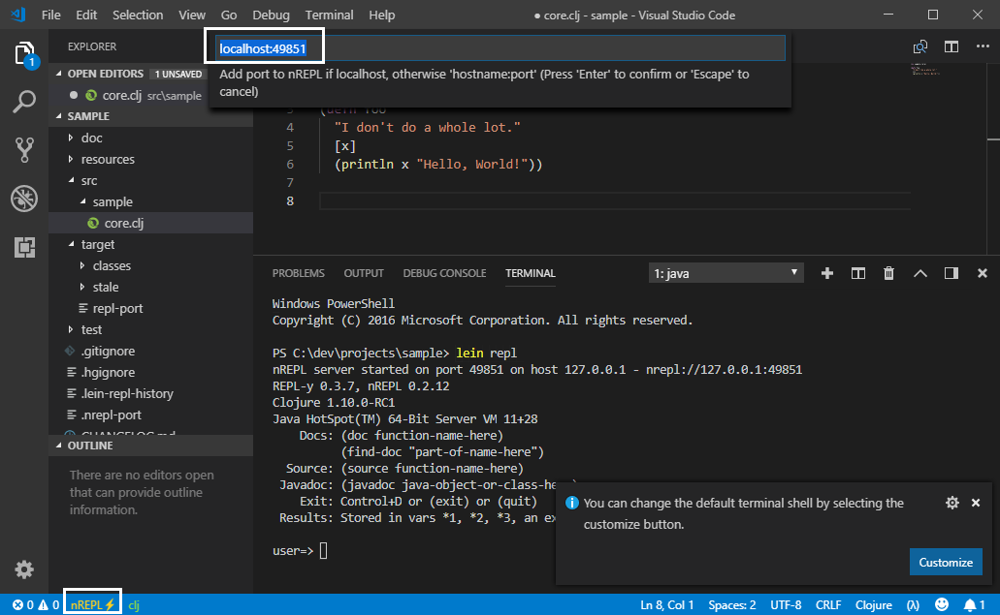
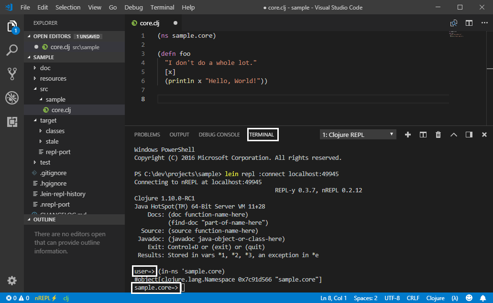
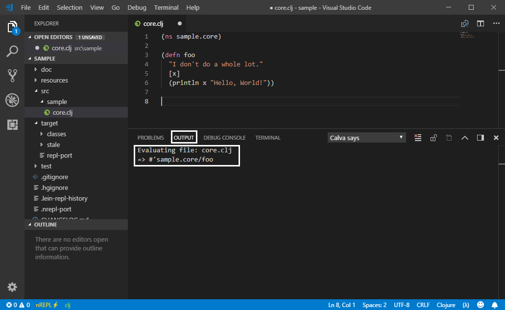
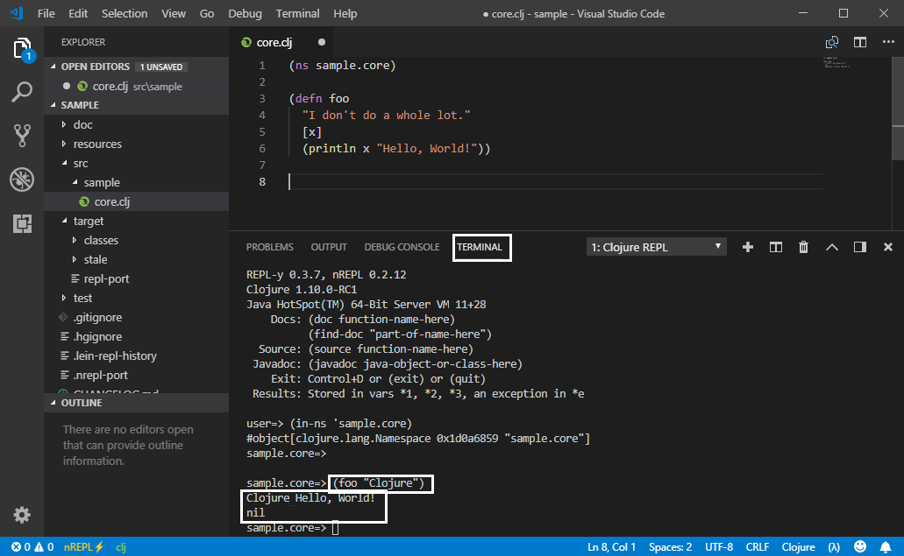
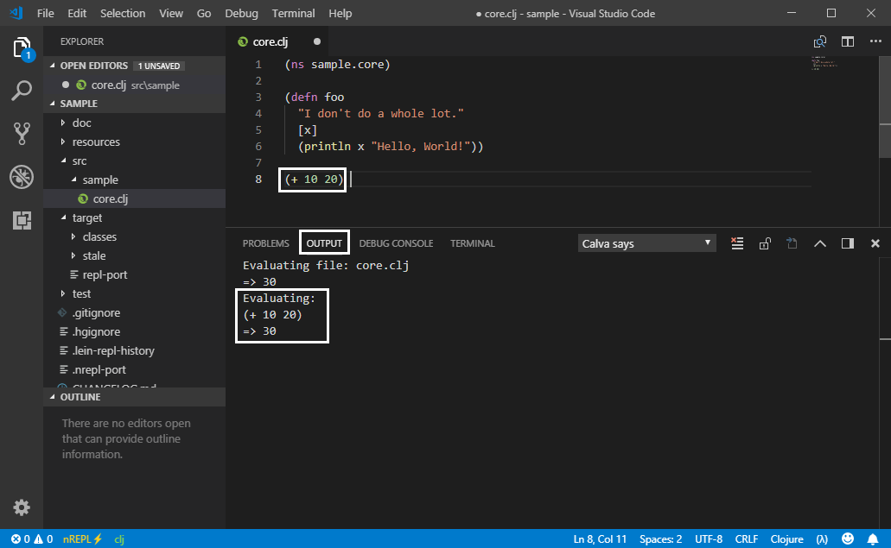

1. Visual Studio Code 설치
-
https://code.visualstudio.com/Download 페이지를 방문해 Windows용 VS Code(여기서는 User Installer 64 bit: VSCodeUserSetup-x64-1.28.1.exe)를 내려 받는다.
-
내려 받은 파일을 실행해 설치를 마친 후, VS Code를 실행한다.
2. Calva extension 설치
-
[File — Preferences — Extensions]메뉴를 선택한다. -
다음과 같이 텍스트 입력상자에
calva를 입력한 후install버튼을 눌러 Calva extension을 설치한다.
-
설치를 마친 후, VS Code를 재실행한다.
3. Calva REPL 실행 예
-
Calva에 대한 자세한 내용은 https://github.com/BetterThanTomorrow/calva를 참조하기 바란다.
3.1. 프로젝트 열기
-
VS Code를 실행한 후,
[File — Open Folder…]메뉴를 선택해, 위에서 만든C:\dev\projects\sample폴더를 열고,src\sample\core.clj파일을 아래와 같이 연다.
3.2. REPL 실행하기
-
[Termianl — New Terminal]메뉴를 선택해 새 터미널 창을 연 후, 아래와 같이lein repl명령을 실행한다.NoteCalva는 아직 자동으로 repl을 실행해 주지 못해서, 수동으로 이와같이 실행해 주어야 한다. 하지만 이렇게 최초에 한 번 실행해 주면, 추후에 vscode를 재실행해 줄 때에는 이 단계를 거치지 않아도 된다. 
3.3. REPL 연결하기
-
맨 아래 상태줄에 있는
nREPL부분을 클릭하면, 다음과 같이localhost:<포트번호>형식으로 작은 창이 하나 뜰 것이다. 이 상태에서<Enter>키를 눌러주면 nREPL에 연결된다.Note이렇게 최초에 한 번 연결시켜 주면, 추후에 vscode를 재실행할 때에는 이 단계를 거치지 않아도 된다. 
3.4. namespace 전환하기
-
core.clj편집창에 커서를 위치 시킨 후,Ctrl-Alt-v n키를 눌러 주면TERMINAL탭의 namespace가user=>에서sample.core=>로 바뀐다.
3.5. 파일 전체 평가하기
-
core.clj편집창에 커서를 위치 시킨 후,Ctrl-Alt-v <Enter>키를 눌러 주면,core.clj파일 전체가 평가된다. 그 사실이OUTPUT탭에 표시되어 있다.
3.6. 터미널 창에서 코드 실행하기
-
이제
TERMINAL탭에서(foo "Clojure")코드를 입력한 후<Enter>키를 입력해 다음과 같이 실행하면 그 결과가TERMINAL탭에 보일 것이다.
3.7. 편집창에서 코드 실행하기
-
core.clj편집창에 커서를 위치시킨 후, 아래와 같이(+ 10 20)코드를 입력해 보자. 닫는 괄호 뒤에 커서를 위치 시킨 후,Ctrl-Alt-v e키를 누르면, 그 실행 결과가OUTPUT탭에 다음과 같이 표시된다